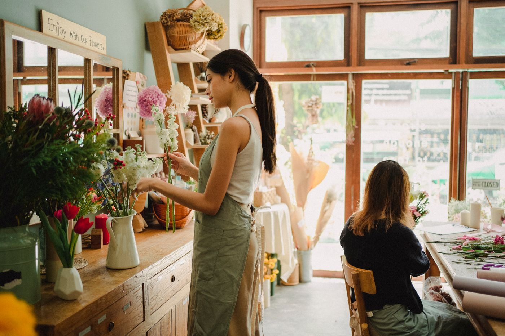

花のアトリエ Fleuretteの一輪一輪は、まとめて仕入れて機械的に束ねるのではなく、色合いや表情を見ながら一本ずつ選んでいます。同じ種類の花でも、その日その日で少しずつ表情が違うもの。ブーケやアレンジメントに組み合わせたときの見え方を想像しながら、時間をかけて選ぶことを大切にしています。
お花は、贈る方の気持ちと、受け取る方の好みや雰囲気、その両方が重なって初めて「その方にぴったりの一輪」になると考えています。だからこそ、ご注文の際には「どんな気持ちを伝えたいか」「どんな方に贈るのか」をお伺いしながら、色の組み合わせや雰囲気をご提案しています。
特に人気をいただいているのが、オーダーメイドのブーケです。「明るい色でまとめてほしい」「予算はこのくらいで」といったざっくりとしたご要望だけでも大丈夫です。お話を伺いながら、季節の花の中からその時々でいちばん良い組み合わせをご提案しますので、花に詳しくない方もお気軽にご相談ください。
オーダーメイドの流れ
ご相談からお渡しまで、3つのステップでご案内します。所要時間や費用の詳細は個別にご相談ください。
ご相談
贈りたいシーンや伝えたい気持ち、ご予算やお好みの色などをお聞かせください。
花選び・ご提案
お話をもとに、季節の花を一輪ずつ選びながら、雰囲気に合う組み合わせをご提案します。
お仕上げ・お渡し
想いを込めて丁寧に仕上げ、世界にひとつの一束としてお渡しします。
大切にしていること
花持ちへの配慮
なるべく長く美しい姿を楽しんでいただけるよう、花選びの段階から気を配っています。
柔軟な提案
ご予算やお好みの色をお聞かせいただくだけでも、その想いに寄り添ったご提案をいたします。
多様な用途への対応
ブーケだけでなく、アレンジメントやドライフラワー、スタンド花まで、様々な場面のお花に対応しています。
手入れのアドバイス
お渡しの際には、お花を長く楽しんでいただくための手入れ方法もあわせてお伝えしています。